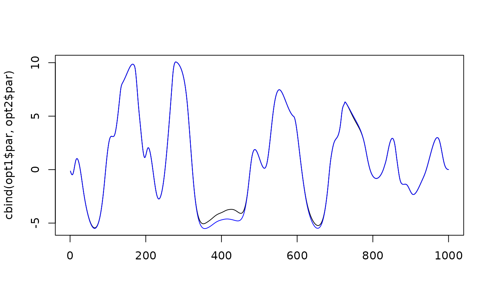

Nonlinear minimizer designed to use cheap Hessian-vector products using make_Hq. The minimizer approximates a Newton update using truncated conjugate gradient, while adapting a regularization parameter designed and using a line-search for each step.
Arguments
- par
initial parameter vector
- fn
function to evaluate negative log-likelihood
- gr
function to evaluate gradient of negative log-likelihood
- Hq
efficient Hessian-vector product function, e.g., make_Hq
- gr_tol
early stopping condition for gradient of Newton solver
- e_ratio
early stopping condition for error of CG, relative to initial gradient
- maxit_newton
maximum iterations for Newton solver
- maxit_CG
maximum iterations for CG solution for each Newton iteration
- c1
stopping condition for line search given CG solution in each Newton iteration, where \(1>c1>0\) seeks to prevent overshoot and resulting zigzagging.
- beta
updates in line search stepsize alpha when Armijo sufficient decrease condition fails
- line_steps
number of steps to explore for linear-search given Newton update
- smartsearch
Turn on adaptive stepsize algorithm for non-convex problems?
- ustep
Adaptive stepsize initial guess between 0 and 1.
- power
Parameter controlling adaptive stepsize.
- u0
Parameter controlling adaptive stepsize.
- stop_if_nonPD
whether to stop CG if recusion is not positive definite
- tol10
Try to exit if last 10 iterations not improved more than this.
- diagnostics
whether to provide extra diagnostics for each Newton iteration
- silent
Be silent or print progress?
Details
This minimizer approximates Newton steps \(x_{i+1} = x_{i} - H(x_i)^{-1} g(x_i)\), where \(H(x_i) = \nabla^2 f(x_i)\) is the Hessian matrix and \(g(x_i) = \nabla f(x_i)\) is the gradient of the negative log-likelihood \(f(x_i)\). It then uses several strategies for numerical and computational efficiency.
It approximates each Newton step \(H(x_i)^{-1} g(x_i)\) using a truncated conjugate gradient algorithm that involves Hessian-vector products \(H(x_i) v\). It then recursively improves the solution until a desired accuracy is reached, controlled by
gr_tol, often using many fewer steps than the full dimensionlength(x_i);It approximates each Newton solution \(H(x_i)^{-1} g(x_i)\) without ever constructing or storing the Hessian \(H(x_i)\), and instead computing Hessian-vector product \(H(x_i) v = \nabla( v^T \nabla f(x_i) )\) using autodifferentiation in RTMB;
After approximating each step direction \(H(x_i)^{-1} g(x_i)\), it uses a line-search algorithm while decreasing the step-size if needed to find a suitable decrease in the objective function, controlled
line_steps,beta, andc1;The CG is monitored to identify whether the Hessian matrix is positive definite (PD), and if it is not PD then the CG may be terminated, controlled by
stop_if_nonPD.When using
smartsearch = TRUE, if the Hessian is not PD, then a regularizationustepis decreased, corresponding to an increase in \(t=\frac{1}{u}-1\) where the Newton step is actually using \((H + tI)^{-1} g\) where \(g\) is the gradient, and \(1>u>0\) corresponds to \(t>0\). This increase or decrease inustep(and associated decrease/increase in \(t\)) is copied fromTMB::newton(). Ifsmartsearch = FALSEthen \(ustep=1\) and \(t=0\) such that CG uses the Hessian corresponding to unregularized Newton steps. This smartsearch behavior controlled byu0,ustep,power, andtol10, and it corresponds to an adaptive "trust-region".
Examples
library(Matrix)
library(RTMB)
# Settings
set.seed(123)
n = 1000
rho = 0.999
# Simulate AR1 process approaching random walk (i.e., ill-conditioned inner problem)
P = bandSparse( n = n, k = c(-1,1), diagonals = list(rep(0.5,n),rep(0.5,n)) )
Q = (Diagonal(n) - rho * t(P)) %*% (400 * Diagonal(n)) %*% (Diagonal(n) - rho * P)
x = RTMB:::rgmrf0( n= 1, Q = Q )[,1]
y = rpois( n = n, lambda = exp(1 + x) )
which_seen = sample( seq_len(n), size = n/10, replace = FALSE)
y[-which_seen] = NA
nll = function(p){
-dgmrf(p$x, Q = Q, log = TRUE) - sum(dpois(y, lambda = exp(1 + p$x), log=TRUE), na.rm=TRUE)
}
parlist = list( x=rnorm(n) )
tape = MakeTape(nll, parlist)
gr = tape$jacfun()
Hq = make_Hq( tape, x = unlist(parlist) )
H = gr$jacfun(sparse = TRUE)
start_time = Sys.time()
opt1 = optim(
par = unlist(parlist),
fn = tape,
gr = gr,
method = "L-BFGS-B",
control = list(
maxit = 1e5
)
)
opt1$runtime = Sys.time() - start_time
opt2 = newton_CG(
par = unlist(parlist),
fn = tape,
gr = gr,
Hq = Hq,
maxit_newton = 1e4,
ustep = 0.01,
silent = TRUE
)
# Compare the estimates and speed
matplot( cbind(opt1$par, opt2$par), type = "l", col = c("black","blue","red"), lty = "solid" )

c(opt1$runtime, opt2$runtime)
#> Time differences in secs
#> [1] 7.281495 14.797011
# newton_CG finds a slightly better fit
c(opt1$value, opt2$value)
#> [1] -1220.361 -1220.471